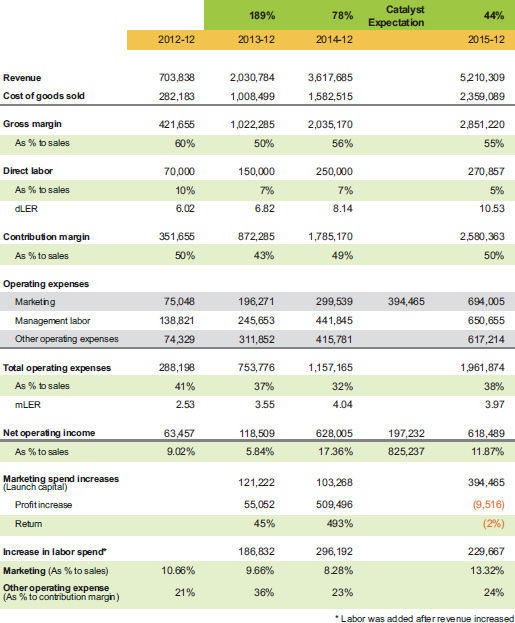
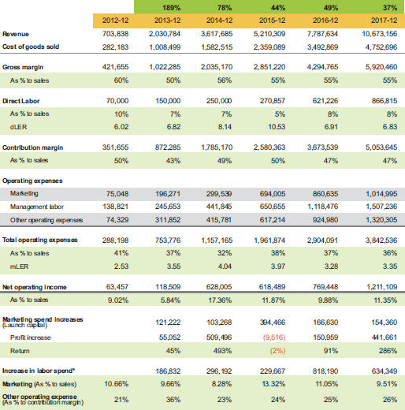

They decided to add $400,000 to their spend and really go big. This time, success would be measured as an increase of $200,000 in net income. Well, they missed it. They did have revenue growth, but net income was flat. Some businesses would still call this a success, but I was proud that they did not. Instead, they critically evaluated what happened:
The result worked like a charm for the next two years, as you can see in table 6.4.
The company moderated their spend increase for year 4 to $166,000, and once again they knocked it out of the park with a 91% return. Then in year 5 they added another increase of $154,000 to marketing and got an even better return of 286%. Eventually their current spend could be reduced to make their
Launch capital example: Years 4 and 5

profit go up considerably, but that could backfire because their customers could wonder why they do not hear from the company anymore, why their website still has the same graphics it had five years ago, why their team member page still has pictures of employees who are long gone, and why their last blog post is 18 months old.
This company’s experience gives hope to any business that has less than $1 million in revenue. It grew from $700,000 to $10 million in revenue in five years, was profitable every year, and used zero debt to get there. As a matter of fact, they were cashflow positive and had plenty of cash to distribute even after taxes were paid. When I show this example, people always ask me what kind of business this is. The answer is not important because most businesses we work with have the same capital signature and profit potential. The one detail I will share is that they are not geographically limited in their customer base.
Professor David Wessels from the Wharton School, who introduced me to the power of the ROIC concept, often says, “it is not your share, it is your where.” The next percentage of market share in a limited geography is very costly to acquire, as opposed to gaining an even smaller percentage of market share in a bigger geographical area. There is no way my firm would be as big as we are if we deployed our current business model for just Huntsville, Alabama. We chose to take geography out of our business model, and now 85% of our clients are not in our city. As I often say, “When I am in Huntsville, I am a local CPA; when I leave town, I am an expert.”
Not every business model is suited to serve multiple geographies, and some companies that have tried failed miserably because they did not invest in the management and serviceability to make it successful. This goes back to your personal choices. If you do not feel confident or just do not want to expand geographically, then don’t. It is your choice, but remember what Professor Wessels says: where, not share. If you limit yourself geographically, it will be a self-imposed constraint on your business potential, and you must accept the challenges it brings. You can look for ways to overcome any constraint, but you need to be clear that geography choice is a critical business strategy.
Launch Capital in Discovery Mode
I wish I could say that all our clients carefully plan their launch capital and use our accounting structure and reporting process, but entrepreneurs tend to be free wheeling and then retrofit our Simple Numbers analysis on the fly to gain financial clarity.
One such example is described later in this section, but first let’s take a look at my firm’s unique Simple Numbers approach. We use it for every client, regardless of industry.